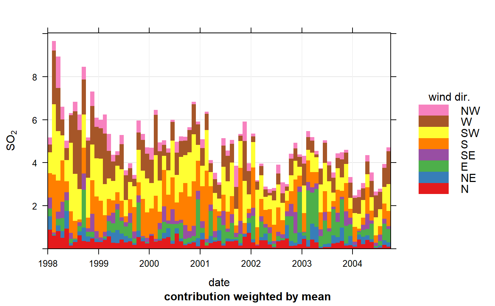

This function shows time series plots as stacked bar charts. The
different categories in the bar chart are made up from a character
or factor variable in a data frame. The function is primarily
developed to support the plotting of cluster analysis output from
polarCluster and trajCluster that
consider local and regional (back trajectory) cluster analysis
respectively. However, the function has more general use for
understanding time series data.
timeProp( mydata, pollutant = "nox", proportion = "cluster", avg.time = "day", type = "default", statistic = "mean", normalise = FALSE, cols = "Set1", date.breaks = 7, date.format = NULL, key.columns = 1, key.position = "right", key.title = proportion, auto.text = TRUE, ... )
| mydata | A data frame containing the fields |
|---|---|
| pollutant | Name of the pollutant to plot contained in
|
| proportion | The splitting variable that makes up the bars in
the bar chart e.g. |
| avg.time | This defines the time period to average to. Can be
“sec”, “min”, “hour”, “day”,
“DSTday”, “week”, “month”, “quarter”
or “year”. For much increased flexibility a number can
precede these options followed by a space. For example, a
timeAverage of 2 months would be Note that |
| type |
It is also possible to choose
|
| statistic | Determines how the bars are calculated. The
default (“mean”) will provide the contribution to the
overall mean for a time interval. |
| normalise | If |
| cols | Colours to be used for plotting. Options include
“default”, “increment”, “heat”,
“jet” and |
| date.breaks | Number of major x-axis intervals to use. The
function will try and choose a sensible number of dates/times as
well as formatting the date/time appropriately to the range
being considered. This does not always work as desired
automatically. The user can therefore increase or decrease the
number of intervals by adjusting the value of |
| date.format | This option controls the date format on the
x-axis. While |
| key.columns | Number of columns to be used in the key. With
many pollutants a single column can make to key too wide. The
user can thus choose to use several columns by setting
|
| key.position | Location where the scale key is to plotted. Allowed arguments currently include “top”, “right”, “bottom” and “left”. |
| key.title | The title of the key. |
| auto.text | Either |
| ... | Other graphical parameters passed onto |
In order to plot time series in this way, some sort of time
aggregation is needed, which is controlled by the option
avg.time.
The plot shows the value of pollutant on the y-axis
(averaged according to avg.time). The time intervals are
made up of bars split according to proportion. The bars
therefore show how the total value of pollutant is made up
for any time interval.
See timePlot for time series plotting,
polarCluster for cluster analysis of bivariate
polar plots and trajCluster for cluster analysis
of HYSPLIT back trajectories.
David Carslaw
## See manual for more examples e.g. related to clustering ## monthly plot of SO2 showing the contribution by wind sector timeProp(mydata, pollutant = "so2", avg.time = "month", proportion = "wd") #> Warning: 219 missing wind direction line(s) removed 